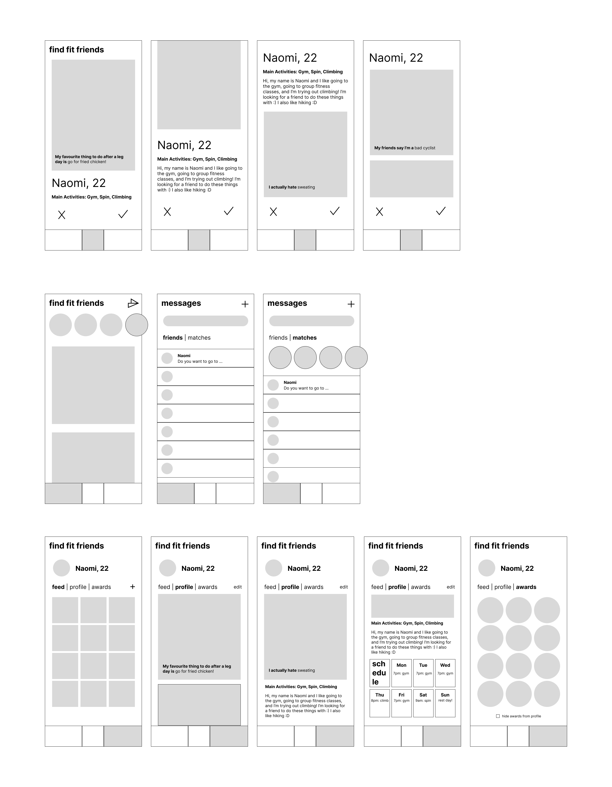
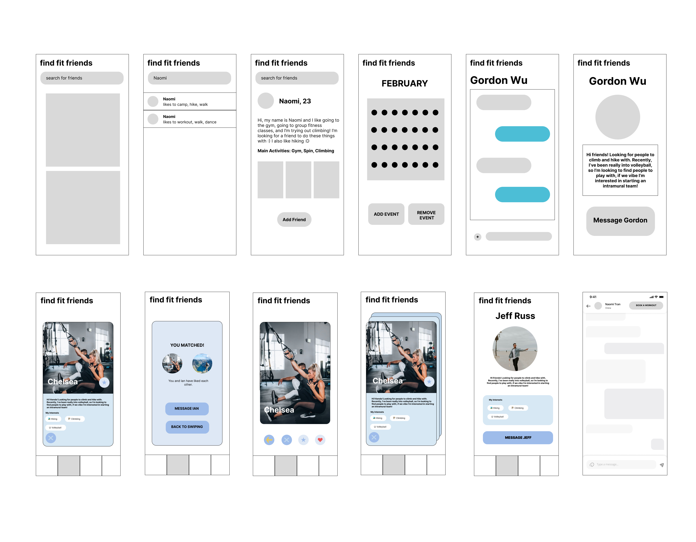

case study
with Angel Bao, Will Oxtoby & Gordon Wu
College makes it easy to meet people and stay active. Post-college, less proximity and busier schedules make both harder — especially during the stressful transition from studying into a full-time job.
An app for finding friends with similar physical activity interests — working out, spin class, walking, hiking, and more. You request to be friends, then see each other's posts: photos, comments, and a schedule of when, where, and what's planned, like a social platform built around getting active together.
📱 dating app × social feed × calendar
👥 find friends to stay active and accountable with
🗓 make coordinating activities effortless
how I worked
grounding the concept
weighing the options
Inspired by the familiar dating-app swipe pattern, with messaging and a scrolling feed modeled on standard social conventions.
pros: leans on patterns users already know
cons: scheduling isn't intuitive yet, and profile info reads as scattered — needs more design work

Inspired by BeReal/Instagram — a scrollable photo feed, a search function to find people, and profiles that open into messaging. Schedule resembles a monthly calendar.
pros: more community-first — you can message anyone after viewing their profile, no friend request required
cons: the add/remove event buttons may go unused if people expect to edit events straight from the date itself

testing the assumption
Full write-up covering background, methods, findings, limitations, and future directions.